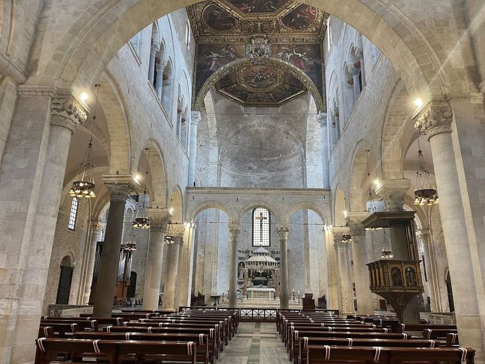
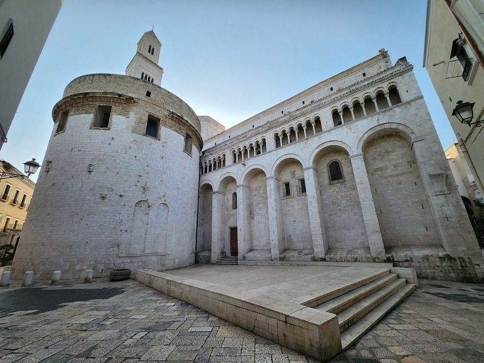
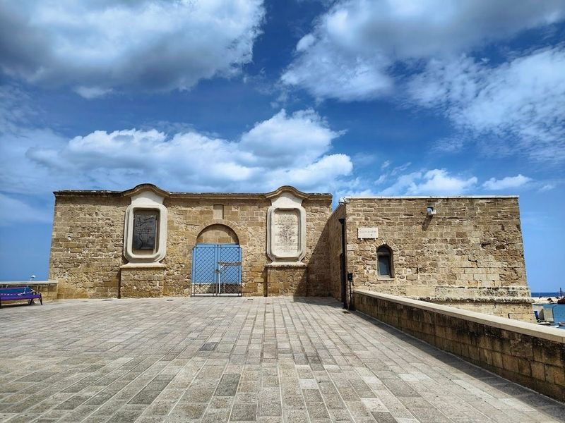
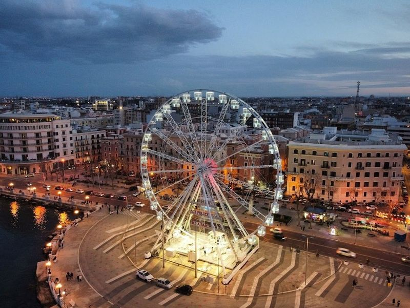
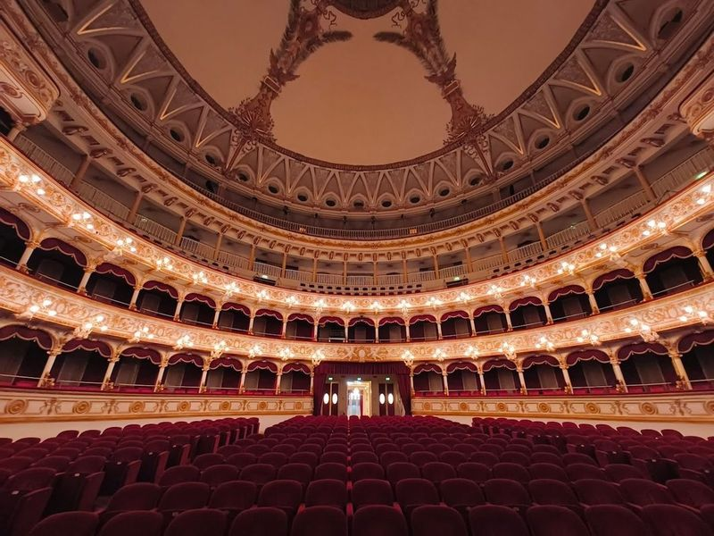
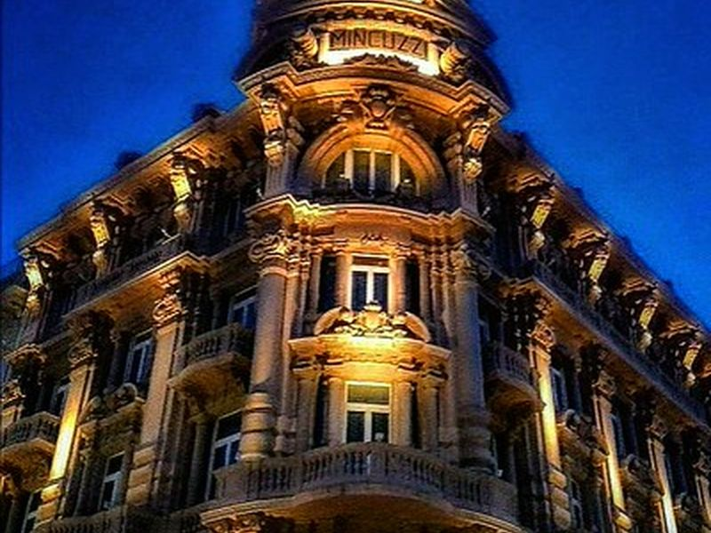
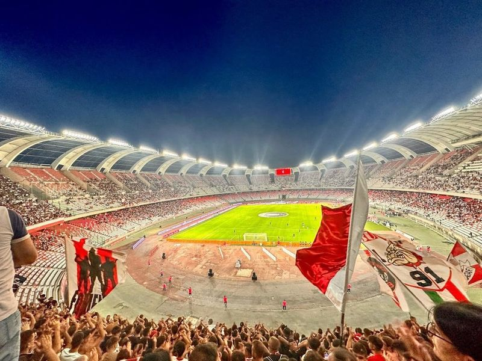
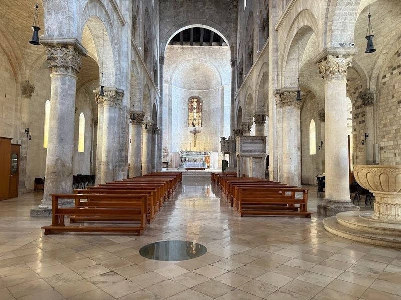
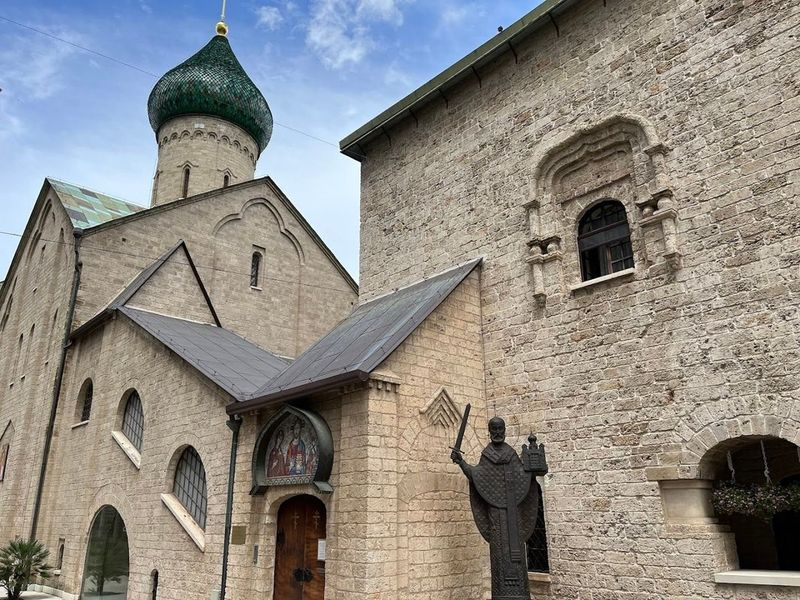
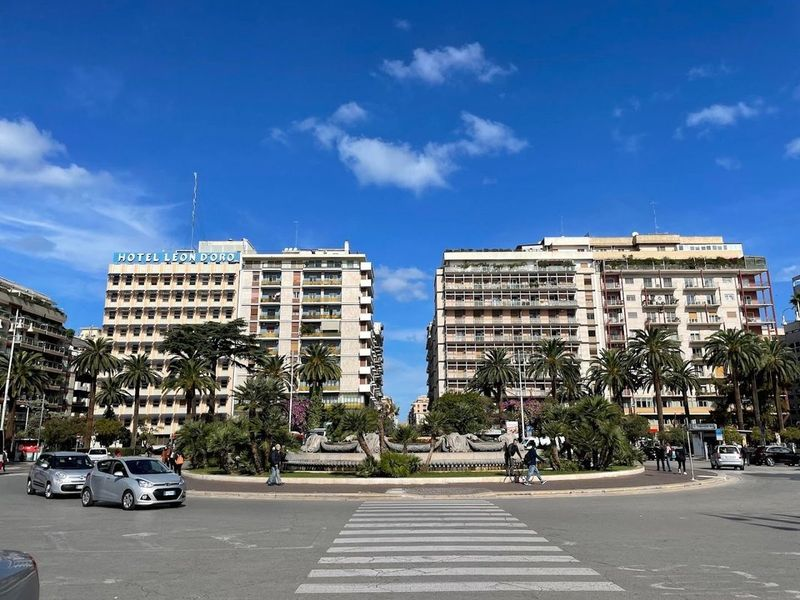

Explore Bari
A Brief History
Bari commands the Adriatic where Roman Barium handled cross-sea traffic to Dalmatia and Greece. Norman and Hohenstaufen rulers built the castle and basilica that still house relics of Saint Nicholas, drawing Orthodox and Catholic pilgrims. The old town's winding lanes above the port and the Murat quarter's nineteenth-century grid show how Apulia's chief city linked Crusade embarkation, grain exports, and modern ferry routes to the eastern Mediterranean.
Attractions Map
Top Sights & Activities

Basilica San Nicola
The Basilica di San Nicola, a remarkable Romanesque structure built between 1087 and 1197, stands as a significant pilgrimage site for both Eastern European Roman Catholics and Orthodox Christians. This sacred place is home to the revered relics of Saint Nicholas, attracting countless devotees from diverse backgrounds who come to honor this legendary figure. The basilica serves as a unique intersection of Eastern and Western Christian traditions, symbolizing unity in faith.

Cathedral of Saint Sabinus
Basilica Cattedrale Metropolitana Primaziale San Sabino is a 13th-century Romanesque church located near the Basilica of San Nicola in Bari's old town. The white stone facade adorned with sculptures and intricate details resembles its more famous neighbor. Inside, the cathedral features plain walls punctuated with deep arcades and an eastern window adorned with plant and animal motifs.

Il Fortino di Sant'Antonio
Il Fortino di Sant'Antonio is a 16th-century defensive structure in Bari, rebuilt by the famous Norman leader Roberto il Guiscardo in 1071. It features a chapel and offers views of the azure-blue sea, the harbor, the Fascist District, and both the old and new towns of Bari. The fort now hosts cultural events and is a spot near the old town.

Lungomare Araldo di Crollalanza
Lungomare Araldo di Crollalanza is a picturesque waterfront promenade in Bari, Italy, offering views of the Adriatic Sea. This 15 km long promenade was opened in 1927 and is a great place to take a leisurely stroll away from the city center. Along the way, travellers can admire elegant buildings from the fascist era and watch cruise ships and ferries leaving the port.

Teatro Petruzzelli
in the city of Bari, Teatro Petruzzelli stands as a testament to Italy's rich cultural heritage. Established in 1904, this ornate opera house is celebrated for its neoclassical architecture and lavish interiors that captivate both locals and travellers alike. The theater hosts an array of performances, from classic operas to enchanting ballets and engaging children's shows, making it a hub for the arts.

Palazzo Mincuzzi
A historic building in the heart of Bari, known for its elegant Art Nouveau architecture and as a landmark shopping destination. The site is catalogued as a palace. The site is catalogued as a palace. The site is catalogued as a palace. Palazzo Mincuzzi is listed among principal sites for Bari within Italy.

Stadio San Nicola
Stadio San Nicola is a versatile stadium located on the outskirts of the city, with a seating capacity of over 58,000. Designed by Renzo Piano, it resembles a flower with 26 petal-like sections. Initially built for the 1990 World Cup, it serves as the home ground for FC Bari and hosts various events including football matches, concerts, and other sports events.

Cathedral of Saint Mary of the Assumption
The Cathedral of Saint Mary of the Assumption is a architectural gem dating back to the 11th and 12th centuries, showcasing exquisite stone carvings and a striking griffin tile in its crypt. This church holds a hidden treasure beneath its surface: an early Christian church that was excavated in the late 20th century, revealing mosaics that transport travellers back in time.

Russian Orthodox Church of Saint Nicholas
The Chiesa Ortodossa Russa di San Nicola is a significant religious site in Bari, Italy. This Russian Orthodox church has a rich history dating back to the 12th century and is home to the relics of an ancient saint. The church's architecture is a blend of modern and Baroque styles, featuring ornate decorations, sculptures, impressive frescoes, religious paintings, and intricately carved altars.

Bari Centrale
Bari Centrale is a bustling transportation hub that connects travellers to the heart of Bari and beyond. It serves as a gateway to the historic district of Bari Vecchia, where ancient charm meets modern vibrancy. This area, nestled between the old and new ports, boasts architectural marvels like the Norman Swabian Castle and is a treasure trove of cultural heritage.